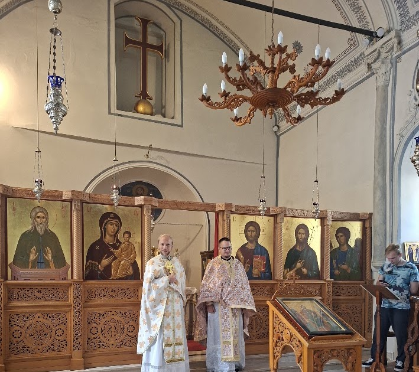

Aktualijos
Antalijos krikščionių atgimimas: kaip vyskupas ramią „pensiją“ iškeitė į misiją
Vos prieš kelerius metus Antalijos pakrantėse tebuvo saujelė stačiatikių bendruomenių, o šiandien čia veikia gyva parapija ir misija.
Skaityti daugiau →